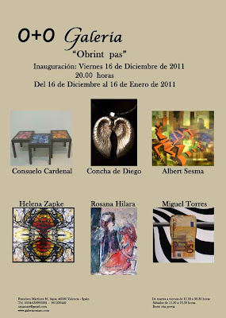

"Obrint pas": Inauguración 16 de diciembre de 2011 a las 20.00
domingo, 4 de diciembre de 2011
{kind=link}

“OBRINT PAS"
Del 16 de Diciembre de 2011 al 16 de Enero de 2012
Inauguración viernes 16 de Diciembre a las 20:00 horas
Del 16 de Diciembre de 2011 al 16 de Enero de 2012
Inauguración viernes 16 de Diciembre a las 20:00 horas
La Galería O+O de Valencia, dirigida por Enriqueta Hueso, nos presenta “OBRINT PAS“ exposición colectiva que da paso al nuevo año 2012. Una muestra cargada de formatos, técnicas y motivaciones que está compuesta por los trabajos de seis artistas: Consuelo Cardenal, Albert Sesma, Rosana Hilara, Concha de Diego, Miguel Torres y Helena Zapke.
Tras un año lleno de proyectos artísticos Oriente & Occidente Gestión Cultural da la bienvenida al nuevo año reuniendo un grupo de artistas que nos ofrecen: desde diseños de joyas a customización de muebles; pinturas geométricas y naturalistas en los límites del surrealismo; instalaciones lumínicas; etc. La pintura al servicio de la fantasía que lucha contra la realidad, la instalación que despliega sus alas a través de la luz, joyas que dejan de relucir nubladas por el tiempo, ramificaciones del pensamiento convertidas en espirales de sentimientos y el color triunfando frente a la línea sinuosa.
Tras un año lleno de proyectos artísticos Oriente & Occidente Gestión Cultural da la bienvenida al nuevo año reuniendo un grupo de artistas que nos ofrecen: desde diseños de joyas a customización de muebles; pinturas geométricas y naturalistas en los límites del surrealismo; instalaciones lumínicas; etc. La pintura al servicio de la fantasía que lucha contra la realidad, la instalación que despliega sus alas a través de la luz, joyas que dejan de relucir nubladas por el tiempo, ramificaciones del pensamiento convertidas en espirales de sentimientos y el color triunfando frente a la línea sinuosa.
Un conjunto lleno de riqueza y diversidad de obras que unidas crean una torbellino de sensaciones, que buscan mostrar la diversidad a través de las diferentes disciplinas. Diversos nexos de unión que se abren paso a través de estilos y formas de expresión diferentes. Creando un movimiento hipnótico donde las diferentes técnicas, soportes y reflexiones nos atraen a descubrir a sus creadores. Estáis invitados a conocerlos, adelante.
CONSUELO CARDENAL
Presenta tres pequeñas instalaciones, en forma de dípticos y trípticos, de colores intensos y un conjunto de muebles customizados compuesto por tres mesas. Todo el trabajo de Consuelo Cardenal (1948, San Sebastián) refleja su filosofía de vida, vemos que sus obras saltan de un estímulo a otro, mezclando de forma lúdica y con un humor particular ideas como pasado, presente, rebeldía, reflexión, sueños, compromiso, recuerdos, etc.
Consuelo Cardenal, nace en San Sebastián y reside en Madrid. Artista multidisciplinar (Licenciada en Bellas Artes, Diplomada en Diseño de Interiores, Técnico Superior en Diseño Gráfico e Industrial y Graduada en Arte Dramático), que desde el 2006 investiga e experimenta principalmente el arte digital y el videoarte. Ha estado presente en Estampa, MadridFoto, Art Madrid, Lineart (Gante, Bélgica), Kunstart (Bolzano, Italia), Expotrastiendas (Buenos Aires, Argentina), Feria de Arte Internacional Oasis (Osaka, Japón), Bienal De Madeira, Shanghai Art Fair, etc.
ALBERT SESMA
Nos presenta en O+O una obra novedosa que se aleja del hiperrealismo característico de su trabajo, adentrándose en el surrealismo geométrico. Esta muestra presenta una revolución en su pintura que se fundamenta en la investigación, evolución y el cambio.
Tras sus estudios superiores en Bellas Artes, en la Universidad de Bilbao, Albert Sesma (1976, París) fue discípulo durante cinco años de Antonio López, quien marcará su trayectoria artística. Su trabajo ha recibido más de cuarenta premios nacionales e internacionales, exponiéndose en Madrid, Barcelona, Bilbao, Vitoria, A Coruña, Holanda, Niza, Shanghai, entre otras ciudades. En su pintura es una constante y punto de inspiración la calle y lo urbano. En esta ocasión las aceras, carreteras, edificios y peatones se descomponen y transforman en un estallido de figuras geométricas que se reinterpretan creando un nuevo espacio. La geometría inunda la realidad hasta convertirse en un mundo surrealista.
ROSANA HILARA
Compagina su labor artística con la enseñanza audiovisual. Entre sus últimas ferias destaca su participación en Fémina 2011 de Madeira y Shanghai Art Fair 2011.
Un fondo abstracto es el soporte donde comienzan a surgir los dibujos abocetados de Hilara, que en pocas líneas crea y ordena el espacio circundante. Pinceladas ágiles, brochazos ligeros, direcciones cromáticas y trazos gestuales dan un intenso carácter a una pintura que parecen surgir del desdibujado de la línea a través del color. Fragmentos de vivos colores que se sobreponen y traspasan los límites marcados por el dibujo, como si los tonos invadieran toda la composición. De este modo, los óleos que presenta Rosana Hilara para esta exposición se caracterizan por la inquietud por el color, la libertad en la pincelada y el impulso expresionista.
CONCHA DE DIEGO
Aunque su trabajo se fundamenta en la pintura para la exposición de O+O ha elegido mostrar sus diseños de joyas inspirados en fósiles y formas de la naturaleza. Motivos que se petrifican en una atmósfera de época lejana. Los materiales nobles, como la plata o el oro, dan forma a colgantes, apliques de cinturones y diferentes joyas, que tienen como modelos corales, conchas y caracolas. Un trabajo dinámico que parte del análisis y estudio del aislamiento de la forma esencial de los fósiles que emplea.
Licenciada en Bellas Artes en la Universidad Complutense de Madrid, Concha de Diego, crea formas llenas de sensualidad y atracción, que se nutren de las reminiscencias de la pátina de los años pasados. El arte al servicio de la exclusividad y la personalidad.
MIGUEL TORRES
Tras su paso por la Feria de Arte Múltiple de Madrid ESTAMPA 2011, presenta varias pinturas para esta muestra. El joven artista alicantino trabaja especialmente la pintura al óleo y la instalación, su obra se enmarca en un realismo expresivo, siempre buscando la forma de comunicarse con el espectador. Imágenes con un aire inquietante que nos remiten al anonimato del individuo. En esta ocasión, nos trae pinturas fundamentadas en un juego de sombras y manos, y otras donde un telón de líneas ondulantes negras y blancas nos presenta las inquietudes del artista.
Miguel Torres (Elche 1978) ha expuesto en varios centros de arte y galería de Madrid y Alicante. Su obra se encuentra en las colecciones de los Ayuntamientos de Elche y Crevillente.
HELENA ZAPKE
Despliega sus figuras en forma de hélices, espirales, raíces, ramas… Un conjunto que radiografía lo invisible, una maraña de hebras enredadas que simbolizan los sentimientos y sensaciones de la artista. Pintora, ilustradora y grabadora atraída principalmente por temas de ciencia y naturaleza. Su trabajo presenta estampaciones comprometidas con la naturaleza y compromiso ecologista. Para esta exposición ha elegido varias cajas con instalaciones de luz en metacrilato, diferentes serigrafías y uno de sus últimos grabados sobre papel.
Licenciada en Bellas Artes, Helena Zapke (1968, San Sebastián) ha mostrado su obra en diferentes ferias, galerías y salas de exposiciones de Madrid, Barcelona, Valencia, Vigo, París, Cortona, Roma, Nueva York, etc. Acaba de participar por tercer año consecutivo en la Feria de Arte Múltiple de Madrid ESTAMPA junto a la Galería O+O.